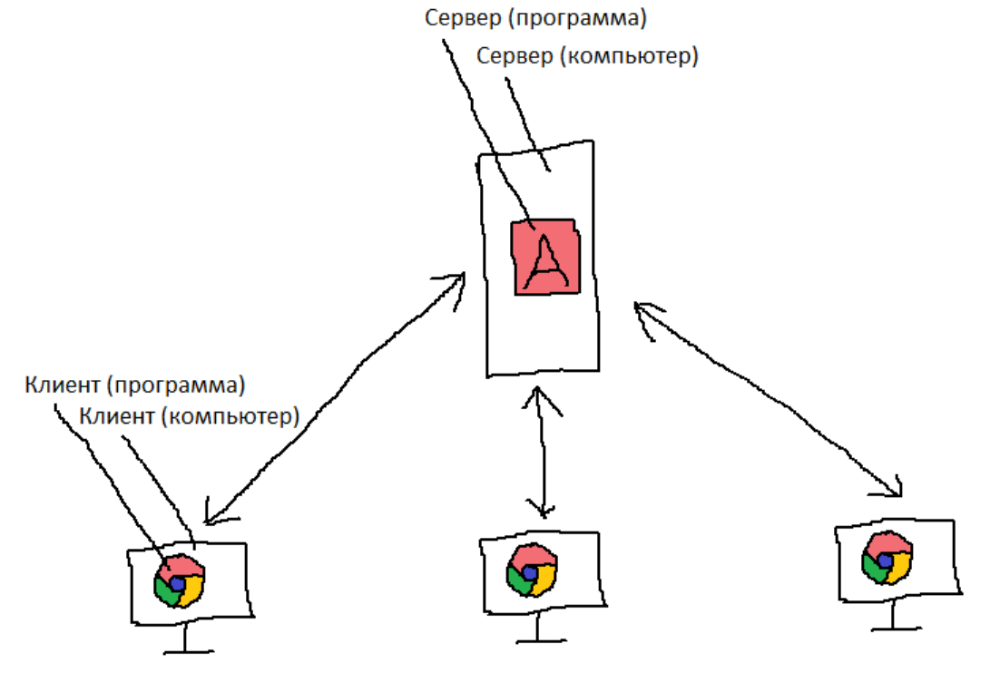

Слово «serve» переводится как «обслуживать», тогда слово «server» переводится как «обслуживатель».
Сервер - это программа, которая обслуживает клиентов. Ещё так называют компьютеры, на которых работают такие программы.
Примеры программ-серверов:
- любой игровой сервер, например Bukkit, Spigot (это игровые серверы Minecraft);
- файловый сервер, например в колледже есть сетевая папка Study (она работает с помощью программы-сервера «служба сервер» в Windows);
- веб-сервер, чтобы компьютер мог показывать сайты клиентам, например Apache, Nginx;
- VPN-сервер - это программа, чтобы клиенты могли подключаться к какому-нибудь компьютеру в другой стране, создавать защищённый туннель и заходить на заблокированные сайты. Примеры программ - WireGuard, OpenVPN.
Вот так выглядит взаимодействие сервера и клиента:
Сервер ←→ Клиент ←→ Пользователь
Пример: есть веб-сервер Apache - это программа, с помощью которой работают сайты. Эта программа работает на каком-то компьютере, который тоже можно назвать сервером. Есть клиент - это браузер, которые отправляет запрос веб-серверу и получает страницу сайта. Клиентом аналогично можно назвать компьютер пользователя.
Обычно клиентов много, сервер один.

К чему это всё? Я хочу, чтобы вы уяснили очень простую мысль: сервер - это всего лишь программа. А то, что мы называем так сами компьютеры, - это просто для удобства.
Поэтому, на самом деле, сервером может быть какой угодно компьютер. Например, если вы поставите программу-сервер Apache на свой смартфон, то смартфон станет сервером. Если вы поставите какую-нибудь программу-сервер на калькулятор, он тоже станет сервером.
Конечно, существуют специальные компьютеры, сделанные специально для программ-серверов, чтобы эффективнее обслуживать клиентов. У них память с коррекцией ошибок, много жёстких дисков, объединённых в RAID-массив и процессор с большим количеством медленных ядер. Но это всё вторично, это просто как бонус. Компьютеру не обязательно быть специальным, чтобы работать как сервер - достаточно лишь программ-серверов.
Как это знание может вам пригодиться? Допустим, вам понадобится сделать сервер. Можно не покупать отдельный компьютер, а просто установить программу-сервер на свой компьютер. Тогда ваш компьютер будет и клиентом, и сервером одновременно. Ваш компьютер сможет и работать с вами как с пользователем, и с клиентами.
Например, когда вы открываете в Minecraft'е мир для сети, ваш компьютер становится сервером. Вы и сами можете играть в своём мире, ещё в ваш мир могут зайти друзья. Сам мир находится на вашем компьютере, но друзья смогут с вами играть, потому что ваш сервер будет обслуживать их клиенты.
Если вы не хотите, чтобы работа программ-серверов и обслуживание клиентов сказывалась на производительности вашего устройства, сделайте сервер из лишнего устройства, которым вы не пользуетесь. Например, хороший вариант сделать сервер из ноутбука:
- ноутбуки имеют батарейку, она будет работать как источник бесперебойного питания;
- ноутбуки тихие, поэтому не будут раздражать ночью, когда вы ложитесь спать;
- ноутбуки потребляют мало энергии, поэтому не придётся платить очень много за электричество, даже если ноутбук будет работать круглосуточно.
Нужно будет просто установить программу-сервер на ноутбук и поставить его куда-нибудь в укромное место, чтобы он работал круглый день и не мешался вам (но это место не должно быть в шкафу: нужно свободное место для циркуляции воздуха, чтобы устройство могло охлаждаться).
Кстати, если вы хотите сделать сервер из отдельного устройства, на котором сами уже ничего не делаете, лучше поставьте туда любую операционную систему Linux. Linux бесплатный, он стабильнее, чем Windows, большинство программ-серверов сделано именно для Linux, они тоже бесплатные, Linux требует намного меньше оперативной памяти (например, Debian + окружение рабочего стола Xfce занимают всего 800 МБ оперативной памяти, а Windows 10 занимает 2000 МБ).
Вывод из всей этой истории: хотя наша тема - это железо, но я хочу вам показать, что для того, чтобы сделать сервер, совсем не обязательно покупать это самое железо. Так что на железе можно очень хорошо сэкономить, если его вообще не покупать, а сделать сервер из подручных средств.